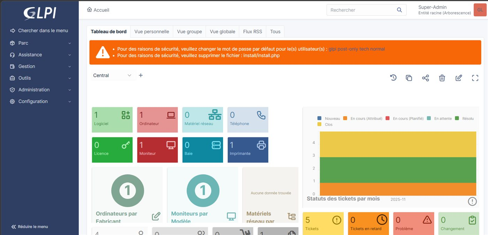

Axel JourdasAdmin systèmes & réseaux en devenir
Étudiant en BTS SIO option SISR à MyDigitalSchool, en alternance. Je câble, je configure et je sécurise : pare-feu et VPN, supervision, durcissement de serveurs et de postes, Active Directory et support.
↳ suivez un câble : chaque étiquette ouvre le projet
Projets phares
Chaque projet a sa fiche : contexte, étapes, commandes, problèmes rencontrés et captures.

Pare-feu pfSense et VPN nomade
pfSense sur Proxmox, segmentation LAN / DMZ / Invités en VLAN et serveur OpenVPN d'accès distant.

Durcissement d'un serveur Debian
SSH par clé, pare-feu UFW, Fail2ban, AppArmor et audit Lynis avant / après.

GLPI : parc et centre de support
Déploiement de GLPI, inventaire, profils et traitement de tickets de bout en bout.
Un câble par domaine
Comme dans une vraie baie, chaque couleur a un rôle. Vous la retrouverez sur tous mes projets.
Réseau
Adressage, VLAN, DHCP, DNS, routage, pare-feu et VPN. Topologies Cisco sur Packet Tracer.
Système
Debian, Windows Server et Active Directory, virtualisation Proxmox, PowerShell et Bash.
Cybersécurité
Durcissement CIS / ANSSI, supervision Wazuh, CTF et entraînement sur TryHackMe.
Support
Gestion de parc et de tickets avec GLPI, diagnostic, relation avec les utilisateurs.
Un stage, une alternance, une question ?
Le port est ouvert : je réponds rapidement par e-mail ou sur LinkedIn.